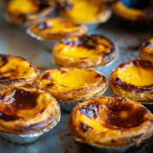
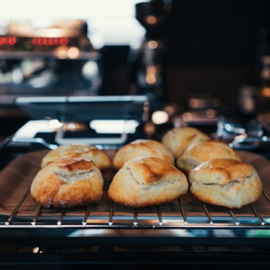
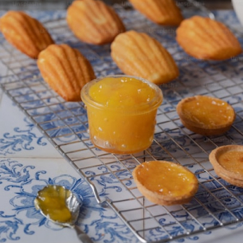
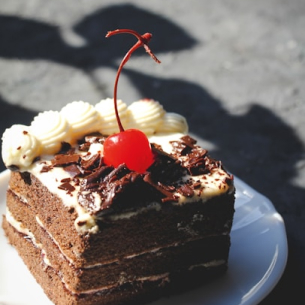
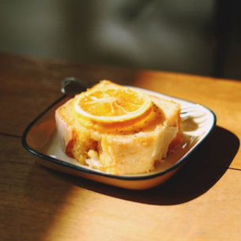
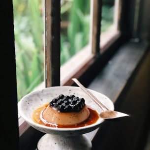

카페여하에서 디저트 한 입만으로도 일상의 바쁜 흐름에서 잠시 벗어나, 감미로운 달콤함과 함께 평온한 시간을 선사하는 특별한 경험을 하세요.
카페에서 느낄 수 있는 진정한 여유는 맛있는 디저트와 함께 찾아옵니다.
정성껏 준비된 디저트는 시각적으로도 아름다워, 눈으로 먼저 즐기고,
입으로 또 다른 즐거움을 선사합니다. 모든 디저트는 풍미가 깊고 특별하여,
그 자체로도 훌륭한 선물 같은 존재입니다.
시그니처 커피&음료

여하 소프트 에그타르트
YEOHA Soft Egg Tart
고소하고 부드러운 에그 크림이 바삭한 타르트 속에 가득 담겨 있어, 한 입 먹을 때마다 입안 가득 퍼지는 부드러움과 고소함이 일품입니다. 타르트의 바삭한 식감과 달콤한 계란 크림이 어우러져 조화로운 맛을 선사합니다. 따뜻하게 먹으면 더욱 풍부한 풍미를 느낄 수 있습니다.
부드럽고 고소한 디저트를 즐기는 분들에게 적합합니다. 간단하고 달콤한 한 입 간식을 찾는 분들에게 완벽한 메뉴입니다.

여하 클래식 플레인 스콘
YEOHA Classic Plain Scone
겉은 바삭하고 속은 부드러운 플레인 스콘은 그 자체로 고소하고 담백한 맛을 자랑합니다. 살짝 따뜻하게 먹으면 버터의 고소한 풍미가 입안 가득 퍼지며, 그 풍미와 함께 찻잔을 더욱 돋보이게 만듭니다.
담백하고 간단한 디저트를 좋아하는 분들에게 적합합니다. 차와 함께 여유로운 티타임을 즐기고 싶은 분들에게 이상적입니다.

여하 레몬 마들렌
YEOHA Lemon Madeleine
상큼한 레몬 향이 가득한 부드러운 마들렌은 바삭한 외피와 촉촉한 속살이 어우러져 입 안에서 행복한 순간을 만듭니다. 레몬의 신선하고 상큼한 맛이 기분 좋은 여유를 선사하며, 한 입에 느껴지는 부드러움이 일품입니다.
상큼한 맛을 즐기고 싶은 분들에게 이상적입니다. 가벼운 디저트를 찾거나 오후의 여유를 즐기고 싶은 분들에게 완벽한 선택입니다.

여하 리치 초코 케이크
YEOHA Rich Chocolate Cake
진한 초콜릿 맛이 입안을 가득 채우는 초코 케이크는 부드럽고 촉촉한 질감과 함께 깊고 풍부한 초콜릿 풍미를 자랑합니다. 초콜릿의 깊고 진한 맛이 너무 달지 않으면서도 적당한 달콤함을 선사하며, 끝없이 먹고 싶은 맛입니다.
진한 초콜릿의 풍미를 사랑하는 분들에게 추천합니다. 초콜릿 애호가라면 한 번의 맛으로 깊은 만족감을 느낄 수 있는 디저트입니다.

여하 레몬 파운드 케이크
YEOHA Lemon Pound Cake
부드럽고 촉촉한 파운드 케이크 속에 상큼한 레몬 향이 은은하게 퍼져, 입 안에서 상쾌함과 함께 기분 좋은 달콤함을 선사합니다. 레몬의 자연스러운 신맛과 케이크의 달콤함이 조화롭게 어우러져 언제든지 즐기기 좋은 디저트입니다.
상큼하고 달콤한 맛을 선호하는 분들에게 적합합니다. 가벼운 디저트를 찾거나 레몬을 좋아하는 분들에게 완벽한 메뉴입니다.

여하 블루베리 푸딩
YEOHA Blueberry Pudding
부드러운 푸딩에 상큼한 블루베리 소스가 어우러져, 달콤하면서도 상쾌한 맛을 자랑합니다. 푸딩의 크리미한 식감과 블루베리의 새콤달콤한 맛이 조화를 이루어 한 입 먹을 때마다 입 안에서 새로운 즐거움을 선사합니다.
부드럽고 상큼한 디저트를 좋아하는 분들에게 이상적입니다. 달콤하고 신선한 맛을 찾는 분들에게 완벽한 디저트입니다.